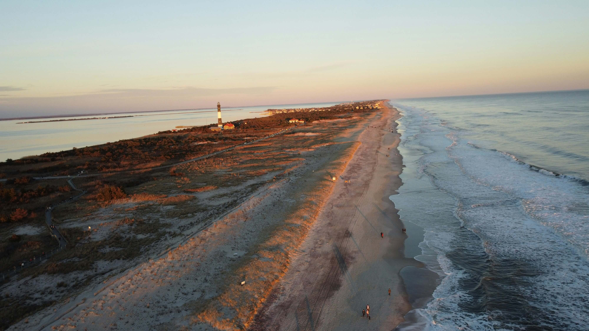
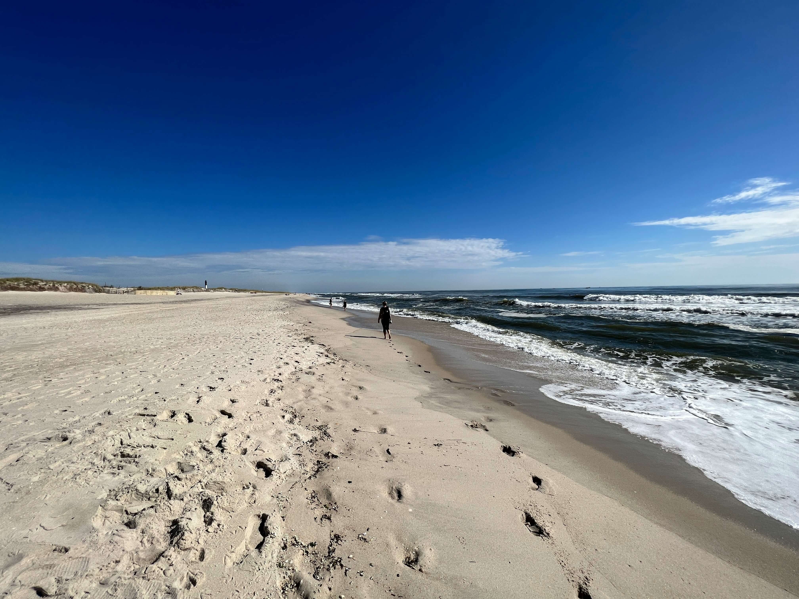

Escaping the Noise: A car-free sanctuary where the only sound is the sea.
My journey to the fireIsland was a peaceful escape from the noise of the city. The adventure began with a scenic ferry ride across the bay, leading to a unique world where cars are replaced by wooden boardwalks and red wagons.
The park's highlight is the iconic black and white striped lighthouse, which stands tall over the rolling sand dunes. Walking the quiet trails throught the sunken forest and along the Atlantic shore makes this destination a true coastal treasure.
Gallery: Fire Island
-

Ariel view of the beach with the lighthouse at a distance -

Stunning Fire Island white sand beach -

A close up view of the fire Island lighthouse
Explore the Island
Whether you are looking for a quiet morning walk through the sunken forest or a sunset view from the top of a lighthouse, Fire Island offers a coastal escape like no other. Adventure is just a ferry ride away.
Plan your visit to the national Seashore.